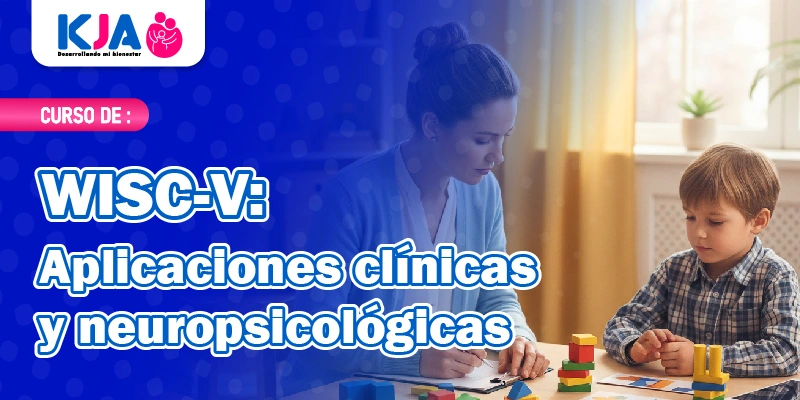
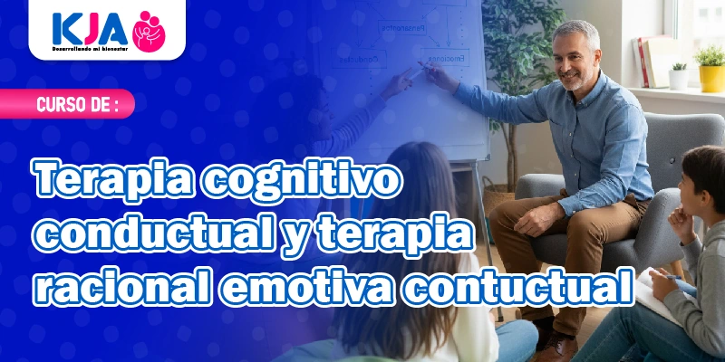
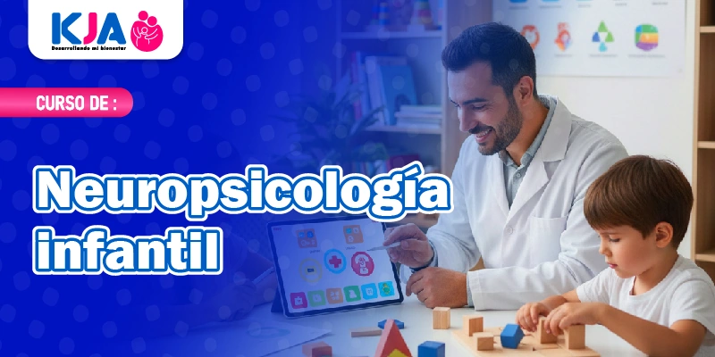
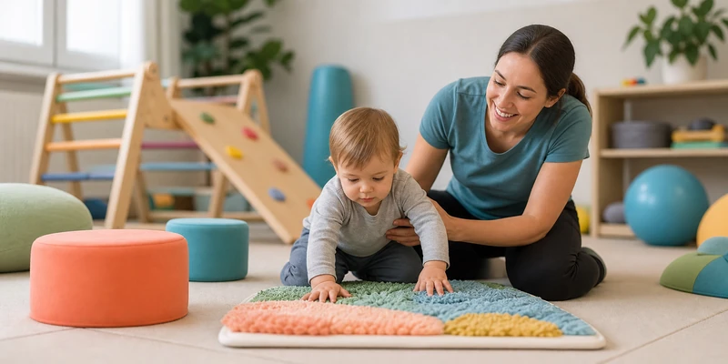

Cargando...
Cursos, especializaciones, talleres y charlas dictadas por psicólogos colegiados, para tu desarrollo profesional y personal.



Elige la categoría que se ajusta a lo que buscas.

Estamos preparando nuevos contenidos en esta categoría. ¡Mantente atento a nuestras redes!
Contáctanos para conocer fechas, horarios y precios. También podemos diseñar un taller a la medida de tu empresa o institución.